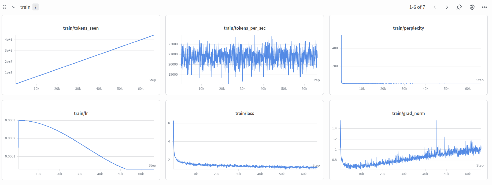

A Llama-style causal language model implemented from scratch in PyTorch. Decoder-only transformer with Grouped Query Attention, Rotary Position Embeddings, RMSNorm, SwiGLU activation, and KV-cache streaming generation with tied embeddings. Pre-training: TinyStories for ~450M tokens. Config: configs/tiny_llama_v1_small.json.
Key features
| Layers | 12 |
| Hidden dim | 768 |
| Attention heads | 12 |
| KV heads | 4 |
| Head dim | 64 |
| FFN dim | 1,024 |
| Max seq length | 256 |
| Vocab (HF) | 32,000 |
| RoPE theta | 10,000 |
| RMS norm eps | 1e-5 |
| Attn dropout | 0.1 |
| Batch size | 32 |
| Learning rate | 3e-4 |
| Min LR | 3e-5 |
| Weight decay | 0.1 |
| Warmup steps | 100 |
| Max grad norm | 1.0 |
| Grad accum | 1 |
| Mixed precision | Yes |
| torch.compile | Yes |
| LR schedule | Cosine |
| Eval interval | 500 |
| Dataset | TinyStories |
| Tokens (approx.) | ~450M |
Training results
